เปิดหน้าเจ้าหน้าที่
สแกน QR หรือเปิดลิงก์นี้ในมือถือ แล้วเพิ่มไว้ที่หน้าจอหลัก (บุ๊กมาร์ก) เพื่อเปิดครั้งต่อไปได้เร็ว
https://nuttasittong.github.io/catalog-songkhla/#/staff
หรือเปิดหน้าเว็บ Catalog จากริชเมนู LINE แล้วกดปุ่ม 🔐 เจ้าหน้าที่ มุมขวาบน
⬇️ ดาวน์โหลดคู่มือเป็นไฟล์ PDF (ไว้พิมพ์หรือส่งต่อทาง LINE)
เจ้าหน้าที่ทำอะไรได้บ้าง
✅ สิ่งที่ต้องมี: มือถือหรือคอมพิวเตอร์ที่ต่ออินเทอร์เน็ต และรหัสเจ้าหน้าที่ 6 หลักของอำเภอ (ขอจากผู้ดูแลระบบ สพจ.สงขลา) — ไม่ต้องลงแอปเพิ่ม ไม่ต้องใช้บัญชี Google
1เข้าสู่ระบบ
เปิดหน้าเจ้าหน้าที่
- เปิดหน้าเว็บ Catalog (จากริชเมนู LINE หรือลิงก์ด้านบน)
- กดปุ่ม 🔐 เจ้าหน้าที่ ที่มุมขวาบน (กรอบสีแดง)
ปุ่มนี้มีทุกหน้าของเว็บ ประชาชนทั่วไปกดได้แต่เข้าไม่ได้ถ้าไม่มีรหัส
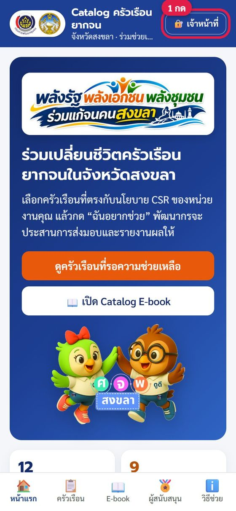
ใส่รหัสเจ้าหน้าที่
- เลือกอำเภอของท่าน (ผู้ดูแลจังหวัดเลือก “ระดับจังหวัด (ทุกอำเภอ)”)
- ใส่รหัส 6 หลัก
- กด เข้าสู่ระบบ
ระบบจำการเข้าระบบไว้ในเครื่อง ปิดแอปแล้วเปิดใหม่ไม่ต้องใส่รหัสซ้ำ (หลุดเองเมื่อไม่ได้ใช้งาน 6 ชั่วโมง)
⚠️ ใส่รหัสผิด 8 ครั้ง ระบบจะพักอำเภอนั้น 15 นาที · ใช้เครื่องร่วมกับคนอื่น ให้กด ออกจากระบบ ทุกครั้ง · ห้ามส่งรหัสในกลุ่ม LINE ที่มีคนนอก
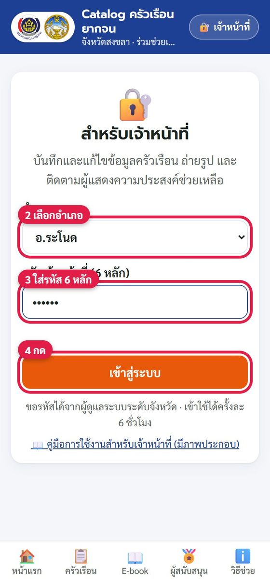
2หน้ารายการครัวเรือน
เข้าระบบแล้วจะเห็นครัวเรือนทั้งหมดของอำเภอ (รวมที่ยังไม่เผยแพร่บนเว็บ)
- เมนูเจ้าหน้าที่ ด้านบน: 📋 ครัวเรือน 📝 รายงานผล 📨 ผู้ประสงค์ช่วยเหลือ 📖 คู่มือ (เปิดคู่มือนี้) ออกจากระบบ
- ตัวกรอง: ทั้งหมด / ข้อมูลไม่ครบ / รอหนังสือยินยอม / รออนุมัติเผยแพร่ / เผยแพร่แล้ว — ตัวเลขบอกจำนวนในแต่ละกลุ่ม
- ช่องค้นหา: พิมพ์ชื่อ รหัส หรือตำบล
- ป้ายสีใต้ชื่อบอกว่ายังขาดข้อมูลอะไร เช่น “⚠ ขาด: จำนวนสมาชิก”
- แตะชื่อครัวเรือนเพื่อแก้ไข · กดปุ่มสีส้ม ＋ เพิ่มครัวเรือน มุมขวาล่างเพื่อเพิ่มใหม่
ผู้ดูแลระดับจังหวัดจะมีช่องเลือกอำเภอข้างชื่อด้านบน เพื่อสลับดูทุกอำเภอ
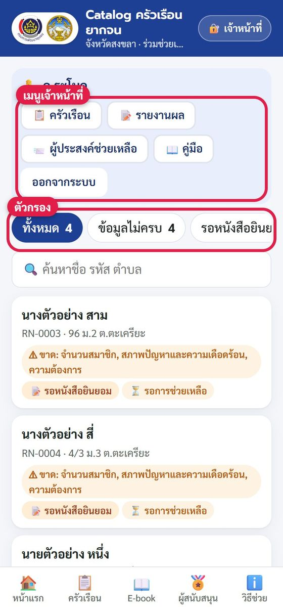
3เพิ่ม/แก้ไขครัวเรือน
ข้อมูลครัวเรือนและสมาชิก
- กรอก ชื่อ-นามสกุลหัวหน้าครัวเรือน, หมู่ที่ และ ตำบล (3 ช่องนี้จำเป็น) ระบบสร้างรหัสครัวเรือนให้เอง เช่น RN-0005
- บ้านเลขที่ใส่ได้ทั้งแบบ 45 หรือ 45/2
- จำนวนสมาชิก และกลุ่มเปราะบาง (ผู้สูงอายุ ผู้พิการ ผู้ป่วยติดเตียง เด็ก) กดปุ่ม − / ＋
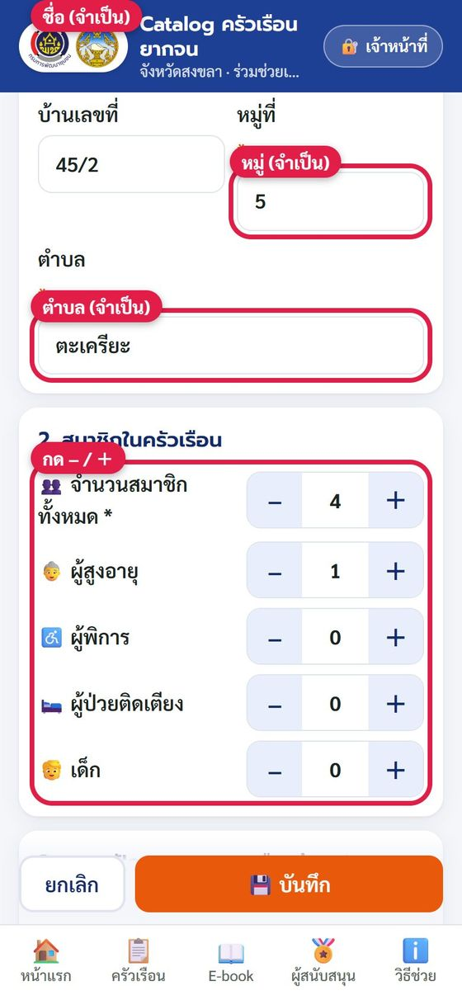
ปัญหาและความต้องการ
- สภาพปัญหา: เล่าสั้น ๆ 2–4 ประโยค แล้วเลือกมิติปัญหา (TPMAP)
- ความต้องการ: บรรทัดละ 1 รายการ กด ＋ เพิ่มรายการ เพื่อเพิ่มบรรทัด กด ✕ เพื่อลบ — ไม่ต้องใส่จำนวนเงิน
- เลือกหมวดความต้องการ และความเร่งด่วน (ช่วยให้บริษัทค้นหาครัวเรือนที่ตรงกับนโยบาย CSR)
- กด 💾 บันทึก ที่แถบล่าง
ชื่อและเบอร์ พัฒนากรผู้ดูแล (ข้อ 8) ระบบจำไว้ให้ ครัวเรือนถัดไปไม่ต้องพิมพ์ซ้ำ · หมายเหตุภายใน ไม่แสดงบนเว็บ ใช้จดเบอร์โทรครัวเรือนได้
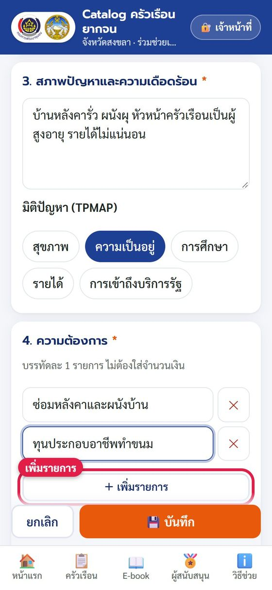
4ใส่รูปภาพครัวเรือน
- บันทึกข้อมูลครั้งแรกก่อน ช่องรูปจะขึ้นในข้อ 5
- แตะช่องรูป → เลือกถ่ายรูปหรือเลือกจากอัลบั้ม ระบบย่อรูปและบันทึกให้ทันที (ขึ้น ✅ บันทึกรูปแล้ว)
- ใส่ให้ครบ 4 ช่อง: ภาพบ้าน (ใช้เป็นภาพหลัก) · ภาพครอบครัว · ภาพสภาพปัญหา · ภาพความเป็นอยู่
- อยากเปลี่ยนรูป แตะช่องเดิมแล้วเลือกรูปใหม่ได้เลย
⚠️ หลีกเลี่ยงรูปที่เห็นหน้าเด็กชัดเจน หรือรูปที่ทำให้ครัวเรือนเสียศักดิ์ศรี · รูปจะแสดงบนเว็บเมื่อครัวเรือนได้รับอนุมัติเผยแพร่แล้วเท่านั้น
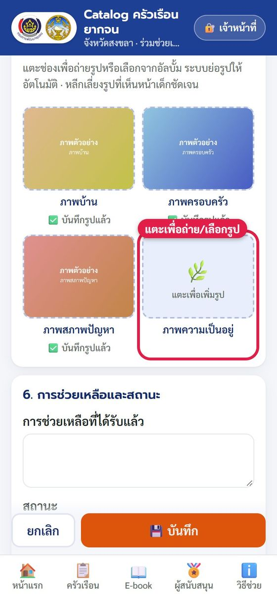
5ยินยอมและเผยแพร่ (PDPA)
- ให้หัวหน้าครัวเรือนลงนามหนังสือยินยอมเปิดเผยข้อมูล เก็บต้นฉบับไว้ที่สำนักงาน
- ติ๊ก มีหนังสือยินยอมที่หัวหน้าครัวเรือนลงนามแล้ว
- ตรวจข้อมูลให้ถูกต้อง แล้วติ๊ก อนุมัติให้แสดงบนเว็บ (ติ๊กได้เมื่อมีหนังสือยินยอมแล้วเท่านั้น)
- กด 💾 บันทึก — ครัวเรือนจะขึ้นบนเว็บและ E-book ภายในประมาณ 10 นาที
ต้องการซ่อนจากเว็บชั่วคราว → เอาเครื่องหมาย “อนุมัติให้แสดงบนเว็บ” ออกแล้วบันทึก (ข้อมูลยังอยู่ครบ)
เว็บไม่แสดงเบอร์โทรและเลขบัตรประชาชนของครัวเรือน ผู้สนใจช่วยเหลือติดต่อผ่านพัฒนากรผู้ดูแลเท่านั้น
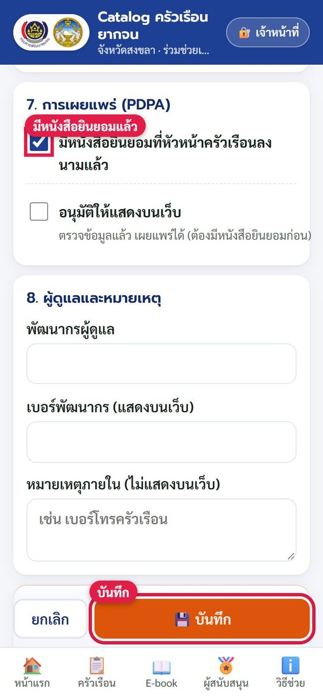
6ลบครัวเรือน
ใช้เมื่อกรอกซ้ำ กรอกผิดคน หรือครัวเรือนไม่อยู่ในเป้าหมายแล้ว
- แตะครัวเรือนที่ต้องการลบ แล้วเลื่อนลงล่างสุด
- กล่องขอบแดง ลบครัวเรือน → กด 🗑️ ลบครัวเรือนนี้
- ตรวจชื่อและรหัสในกล่องยืนยัน แล้วกด 🗑️ ลบครัวเรือน (กด ยกเลิก ถ้าไม่แน่ใจ)
ข้อมูลไม่หายถาวร — ย้ายไปเก็บในแท็บ “ครัวเรือนที่ลบ” ของ Google Sheet ถ้าลบผิด แจ้งผู้ดูแลจังหวัดกู้คืนได้ · รายงานผลที่เคยเขียนไว้ยังอยู่
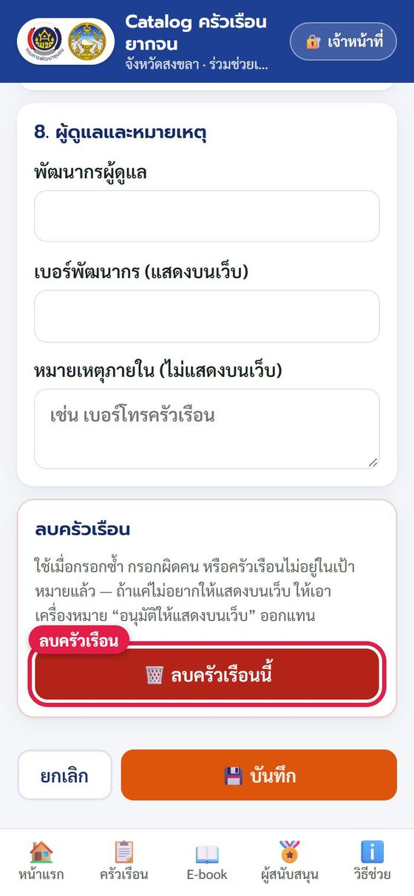
กล่องยืนยันก่อนลบ
ระบบถามยืนยันทุกครั้ง พร้อมบอกชื่อและรหัสครัวเรือน เพื่อกันการลบผิดคน
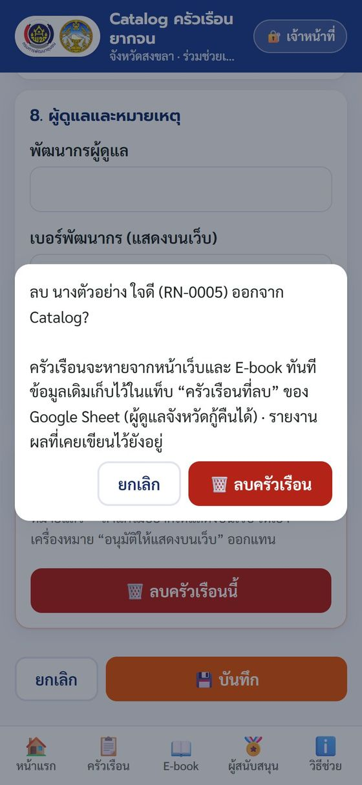
7ผู้แสดงความประสงค์ช่วยเหลือ
เมื่อหน่วยงาน/บริษัทกด “ฉันอยากช่วย” บนเว็บ แอดมินอำเภอจะได้รับอีเมลแจ้ง และรายการจะขึ้นที่เมนู 📨 ผู้ประสงค์ช่วยเหลือ
- ดูชื่อหน่วยงาน ผู้ติดต่อ เบอร์โทร (แตะเบอร์เพื่อโทรได้เลย) และรายการที่อยากช่วย
- ติดต่อกลับภายใน 3 วันทำการ
- เลือกสถานะการติดต่อ (ใหม่ / ติดต่อแล้ว / กำลังดำเนินการ / ส่งมอบแล้ว / ยกเลิก) ใส่ชื่อผู้รับเรื่อง แล้วกด บันทึก
ระหว่างประสานงาน ให้เปลี่ยนสถานะครัวเรือน (ข้อ 6 ในหน้าแก้ไขครัวเรือน) เป็น “กำลังดำเนินการ” และเป็น “ช่วยเหลือแล้ว” เมื่อส่งมอบเสร็จ
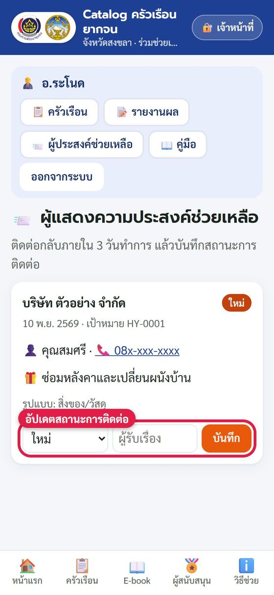
8เขียนรายงานผลการช่วยเหลือ
เปิดรายงานใหม่
- กดเมนู 📝 รายงานผล → ปุ่มสีส้ม ＋ รายงานใหม่
- หรือเปิดหน้าแก้ไขครัวเรือน แล้วกด 📝 เขียนรายงานผลการช่วยเหลือ (ระบบเลือกครัวเรือนให้)
รายการรายงานเรียงล่าสุดก่อน ค้นหาด้วยชื่อ/รหัส/ผู้ให้การช่วยเหลือได้ แตะรายงานเพื่อดูหรือแก้ไข
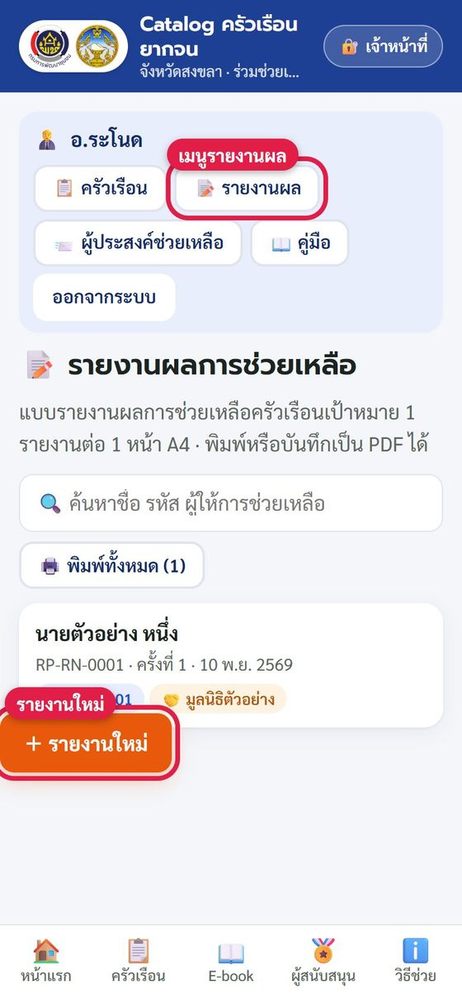
ข้อมูลโครงการและผู้ได้รับความช่วยเหลือ
- ข้อมูลโครงการ: ผู้ให้การช่วยเหลือ (เช่น มูลนิธิ/บริษัท) ข้อความโครงการ/บันทึกข้อตกลง ครั้งที่รายงาน และวันที่ติดตาม — ระบบจำค่าล่าสุดไว้ให้
- 1. ชื่อ-นามสกุล: เลือกจากรายชื่อครัวเรือนใน Catalog เท่านั้น (พิมพ์เองไม่ได้) ถ้ายังไม่มีชื่อ ให้เพิ่มครัวเรือนในข้อ 3 ก่อน
- ข้อ 2–5 (อายุ จำนวนสมาชิก อาชีพ สถานที่ประกอบอาชีพ) กรอกเท่าที่มี — ปุ่ม 📍 ใช้ที่อยู่บ้านจาก Catalog ช่วยเติมที่อยู่ให้
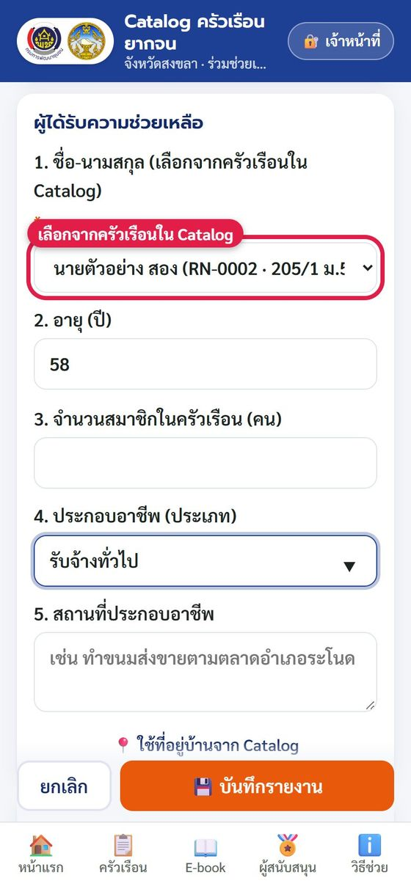
รายละเอียดการช่วยเหลือและผลลัพธ์
- 6. รายละเอียดการช่วยเหลือ: เขียนเล่าว่าได้รับอะไร จากใคร เมื่อไร
- 7. ความเปลี่ยนแปลงด้านคุณภาพชีวิต หลังได้รับความช่วยเหลือ
- 8. ปัญหา/อุปสรรค (ไม่มีให้เว้นว่าง จะแสดงเป็น “-”)
ข้อความยาวไม่เป็นไร ระบบย่อตัวอักษรให้พอดีกรอบในหน้า A4 เอง
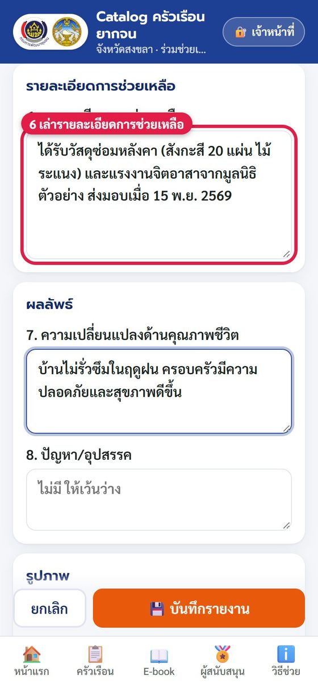
รูปภาพ 5 ช่อง
- ภาพการช่วยเหลือ 3 ภาพ (แถวบนของรายงาน) เช่น การส่งมอบ ระหว่างดำเนินการ หลังดำเนินการ
- ภาพผู้ได้รับความช่วยเหลือ และ ภาพที่อยู่อาศัย
แตะช่องเพื่อถ่าย/เลือกรูป — เลือกรูปก่อนกดบันทึกได้ ระบบจะอัปโหลดให้พร้อมกันตอนกด 💾 บันทึกรายงาน
รูปในรายงานผลไม่เผยแพร่สาธารณะ เก็บใน Google Drive ของสำนักงานเท่านั้น
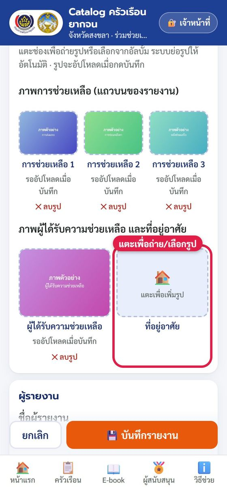
9พิมพ์ / บันทึกรายงานเป็น PDF
- กดบันทึกแล้วจะเห็นหน้ารายงาน A4 ทันที
- กด 🖨️ พิมพ์ / บันทึก PDF → ในหน้าต่างพิมพ์ เลือกเครื่องพิมพ์ หรือเลือก “บันทึกเป็น PDF” เพื่อได้ไฟล์ส่งต่อ
- ＋ รายงานครั้งถัดไป: ระบบยกข้อมูลเดิมมาให้และนับครั้งที่เพิ่มเอง เหลือแก้ผลลัพธ์และรูป
- ✏️ แก้ไข / 🗑️ ลบ รายงานได้จากหน้านี้
- หน้ารายการรายงานมีปุ่ม 🖨️ พิมพ์ทั้งหมด รวมทุกรายงาน (หรือเฉพาะผู้ให้การช่วยเหลือที่เลือก) เป็น PDF ไฟล์เดียว
บนมือถือ: เมนูพิมพ์ของ Android/iPhone มีตัวเลือก “บันทึกเป็น PDF” หรือ “แชร์” ส่งต่อทาง LINE ได้
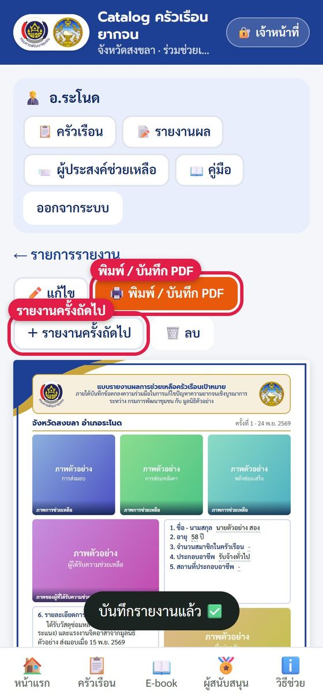
ตัวอย่างรายงาน 1 หน้า A4
- หัวรายงาน: แบบรายงานผลการช่วยเหลือครัวเรือนเป้าหมาย + โครงการ + ผู้ให้การช่วยเหลือ
- อำเภอ ครั้งที่รายงาน และวันที่ติดตาม
- ภาพการช่วยเหลือ 3 ภาพ, ข้อ 1–5 ข้อมูลผู้ได้รับ, ข้อ 6 รายละเอียด, ภาพผู้ได้รับ/ที่อยู่อาศัย, ข้อ 7–8 ผลลัพธ์
- ท้ายหน้ามีชื่อผู้รายงานและรหัสรายงาน
(ภาพประกอบในคู่มือนี้ใช้ข้อมูลและรูปตัวอย่าง ชื่อเป็นชื่อสมมติ)
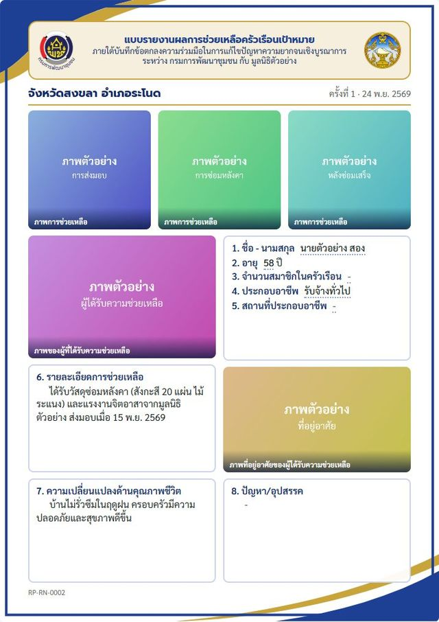
10ปัญหาที่พบบ่อย
| ลืมรหัส / รหัสหลุดไปถึงคนอื่น | แจ้งผู้ดูแลระบบ สพจ.สงขลา ให้ตั้งรหัสใหม่เฉพาะอำเภอของท่าน (อำเภออื่นไม่กระทบ) ผู้ที่ใช้รหัสเดิมจะหลุดจากระบบทันที |
| ขึ้น “ใส่รหัสผิดหลายครั้ง กรุณารอ 15 นาที” | รอ 15 นาทีแล้วลองใหม่ หรือแจ้งผู้ดูแลจังหวัดตั้งรหัสใหม่ (ปลดการพักให้ทันที) |
| ขึ้น “หมดเวลาการใช้งาน กรุณาเข้าสู่ระบบใหม่” | ไม่ได้ใช้งานเกิน 6 ชั่วโมง หรือรหัสถูกเปลี่ยน — เข้าระบบใหม่ด้วยรหัสล่าสุด |
| เปิดครั้งแรกโหลดนาน | ครั้งแรกของวันอาจใช้ 10–15 วินาที (เซิร์ฟเวอร์ Google กำลังเริ่มทำงาน) ครั้งต่อไปจะเร็วขึ้น ถ้าขึ้นข้อผิดพลาดให้กด “ลองใหม่” |
| ขึ้น “Sorry, unable to open the file at this time” | เปิดจากลิงก์เก่า (script.google.com) ในเบราว์เซอร์ที่ล็อกอิน Google หลายบัญชี — ให้ใช้ลิงก์ใหม่ nuttasittong.github.io/catalog-songkhla |
| อัปโหลดรูปไม่ได้ | ตรวจสัญญาณอินเทอร์เน็ต แล้วแตะช่องรูปเลือกใหม่ (ระบบย่อรูปให้อัตโนมัติ ไม่ต้องย่อเอง) |
| บันทึกแล้วยังไม่ขึ้นบนเว็บ | ต้องติ๊กทั้ง “มีหนังสือยินยอม” และ “อนุมัติให้แสดงบนเว็บ” แล้วรอประมาณ 10 นาที |
| หาชื่อไม่เจอตอนเขียนรายงานผล | รายงานเลือกได้เฉพาะครัวเรือนใน Catalog ของอำเภอ — เพิ่มครัวเรือนก่อน (ข้อ 3) แล้วกลับมาเขียนรายงาน |
| ลบครัวเรือนผิด | แจ้งผู้ดูแลจังหวัด กู้คืนได้จากแท็บ “ครัวเรือนที่ลบ” ใน Google Sheet |
ติดต่อสอบถามการใช้งาน: ผู้ดูแลระบบ สำนักงานพัฒนาชุมชนจังหวัดสงขลา